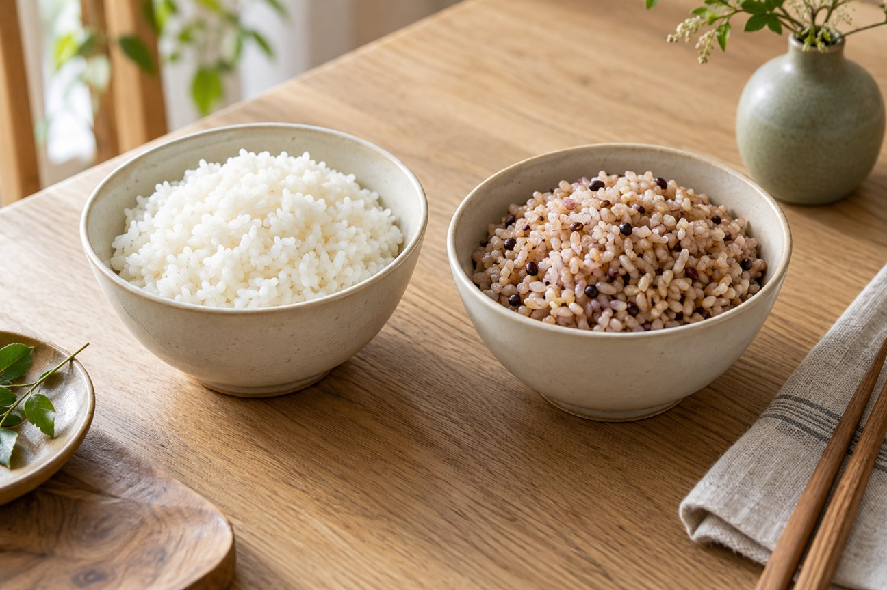
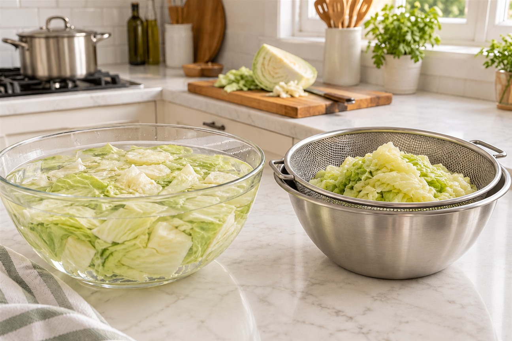
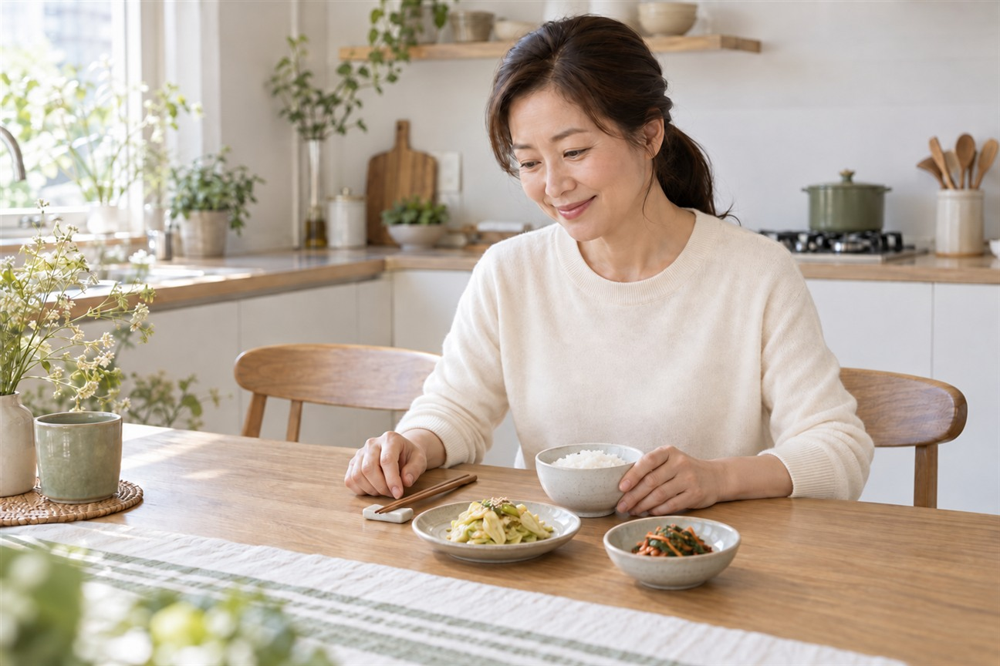

"몸에 좋다길래 매일" 챙겨 먹은 바나나·토마토가 콩팥 망치는 이유
"혈압에도 좋고 활력도 생긴다길래
매일 아침 바나나 한 개랑 토마토를 정성껏 챙겨 드셨나요?"
몸을 생각해서 비싼 과채즙까지 갈아 마셨는데,
어느 날 건강검진표를 받아 들고
'신장 수치 주의' 또는 '사구체여과율 저하'라는
글자를 마주하면 눈앞이 캄캄해지기 마련입니다.

"그럼 콩팥 수치 안 좋으면 이제 과일을 아예 끊어야 하나요?"
결론부터 말씀드리면, 누구나 일률적으로 끊어야 하는 것은 아닙니다!
내 피검사 속 혈청 칼륨 수치와 신장 기능 단계에 따라 대처법이 달라지지만,
배설 능력이 떨어진 상태에서는 남들에게 유익한 바나나·토마토가
오히려 심장에 큰 부담을 주는 '칼륨 복병'이 될 수 있기 때문입니다.
| 몸에 좋은 과일이 신기능 저하 시 왜 부담이 될까요

건강한 콩팥은 우리가 음식으로 섭취한 칼륨의
무려 90% 이상을 소변으로 알아서 척척 배출해 줍니다.
몸속 나트륨을 빼주고 혈관을 부드럽게 이완시키니
일반인에게는 더할 나위 없이 훌륭한 영양소인 셈이죠.

하지만 나이가 들거나 당뇨, 고혈압 등으로 인해
신장 사구체 여과 기능이 떨어지기 시작하면 상황은 크게 달라집니다.
배출구가 꽉 막힌 세면대처럼
빠져나가지 못한 칼륨이 핏속에 고스란히 쌓여 '고칼륨혈증'을 일으키는 거거든요.
혈청 칼륨이 위험선인 5.5를 넘어가면
손발 끝이 찌릿찌릿 저려오고 입술 근육이 굳어지며,
심하면 심장이 규칙적으로 뛰지 못하는 치명적인 부정맥을 부르게 됩니다.
| 잡곡밥 대신 흰쌀밥? 밥상에 숨은 결정적 반전


"신장 챙긴다고 현미랑 흑미, 콩 듬뿍 넣은 잡곡밥만 드셨나요?"
체중 관리와 혈당 조절에는 잡곡밥이 일등 공신이지만,
칼륨과 인 배출 장애가 시작된 환자 밥상에서는 오히려 '흰쌀밥'이 미네랄 부담을 덜어주는 선택이 됩니다.

곡물의 껍질과 배아에는 식물이 스스로를 지키려고 모아둔
칼륨과 인이 아주 농축되어 있거든요.
실제로 농촌진흥청 영양성분표를 살펴보면,
현미밥의 칼륨과 인 함량은 백미밥의 약 2.5~3배에 달합니다.
물론 모든 콩팥 환자가 일률적으로 잡곡을 끊어야 하는 것은 아니며,
정기 혈액검사의 칼륨·인 수치와 잔여 신기능 단계에 따라 개별화됩니다.
배설 기능이 떨어져 수치 조절이 필요할 때는 미네랄 부담이 적은 백미밥을 기본으로 식단을 상의하시는 것이 안전합니다.
| 채소 속 칼륨 줄여주는 2단계 안심 조리 요령


"그럼 신장 안 좋으면 채소를 아예 끊어야 하나요?"
절대 그렇지 않아요!
칼륨은 '물에 녹아 나오는 수용성 성질'을 가지고 있거든요.
조리법 딱 2가지만 기억하시면 채소 속 칼륨을 상당량 줄여낼 수 있습니다.
① 1단계 찬물 침출: 채소를 얇게 썰어 채소 부피의 5배에서 10배 물에 2시간 이상 담가둡니다.
② 2단계 데쳐서 물 버리기: 끓는 물에 삶아 데친 뒤,
데친 물은 절대 국물 요리에 쓰지 말고 전량 버리셔야 합니다.

그리고 몸에 좋다며 채소 과일을 꽉꽉 짜낸
'농축 녹즙이나 과채즙'은 칼륨이 급격히 흡수될 수 있으니
콩팥이 약하신 분들은 꼭 주의하시는 것이 안전합니다.

남들이 좋다는 유행 건강식에 불안해하지 마시고,
따뜻한 백미밥 한 공기에 깨끗이 데쳐낸 나물 반찬,
그리고 사과 몇 조각으로 내 콩팥에 맞는 편안한 식탁을 차려보세요.
"여러분은 평소 건강을 위해 매일 챙겨 드시던 과일이나 채소가 있으신가요?
혹시 검진표 신장 수치로 고민 중이시라면 편하게 댓글로 나눠주세요 😊"